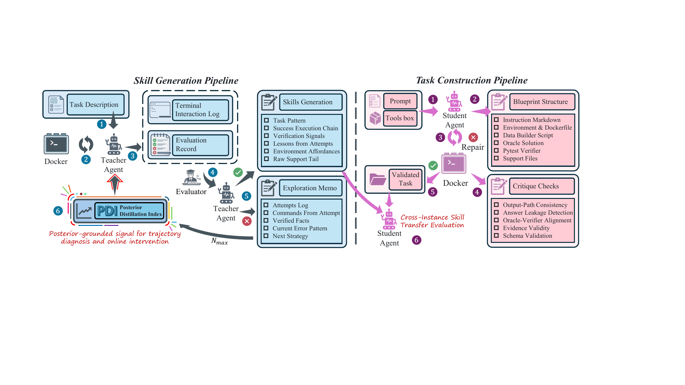
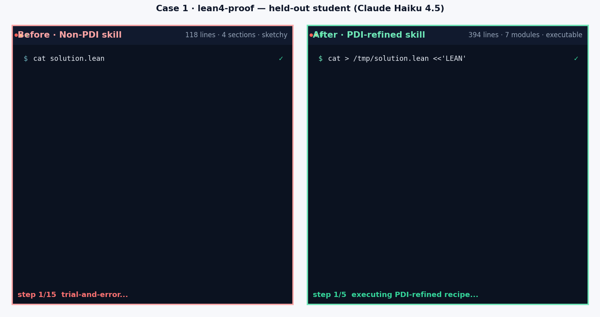
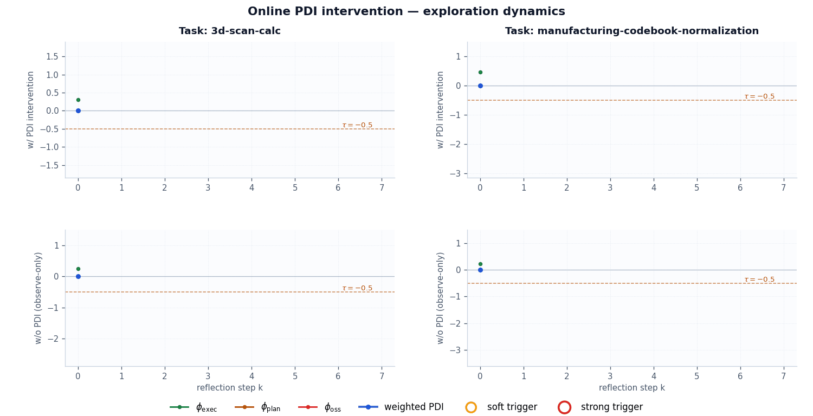
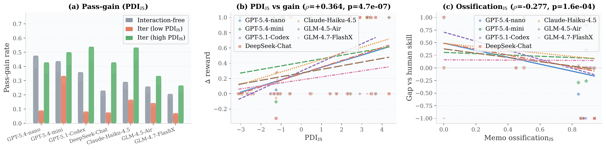
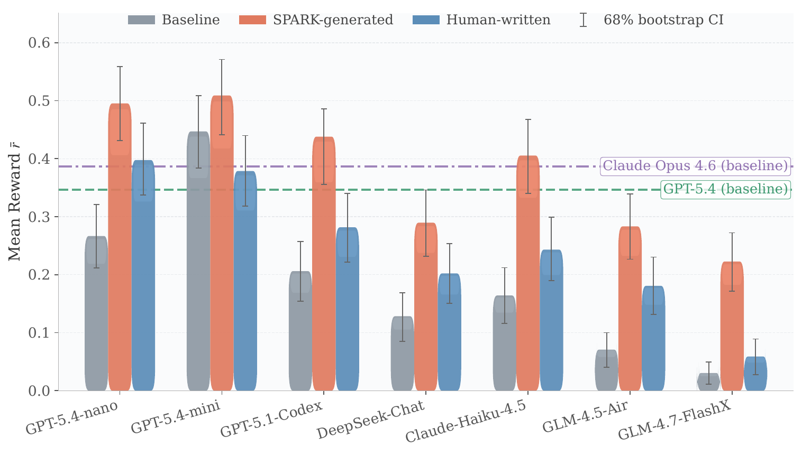
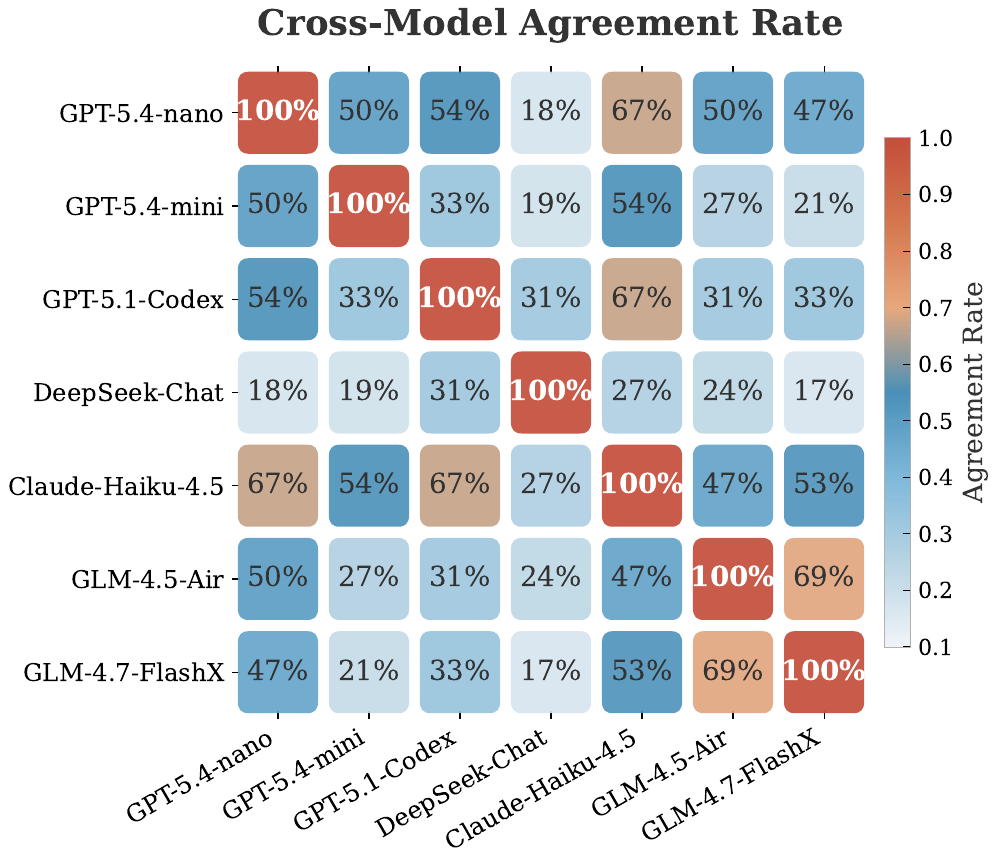
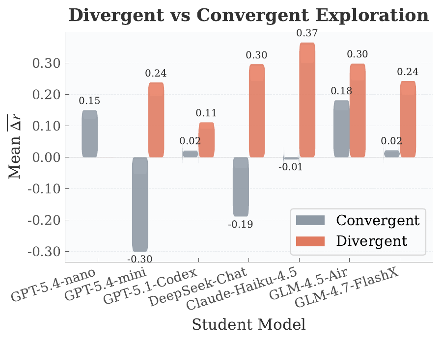
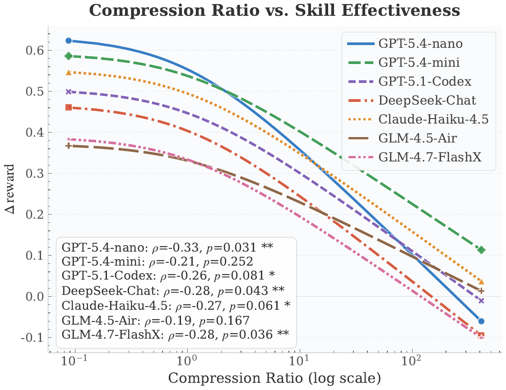
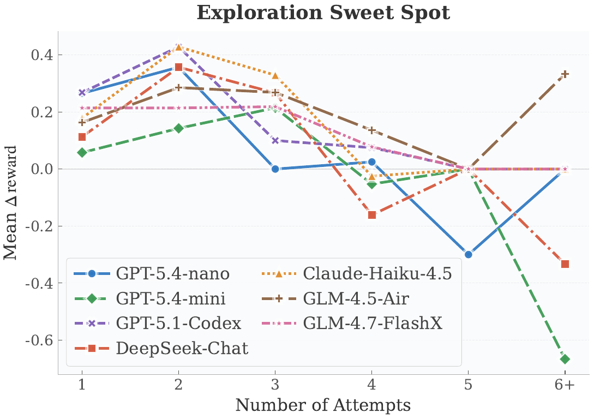
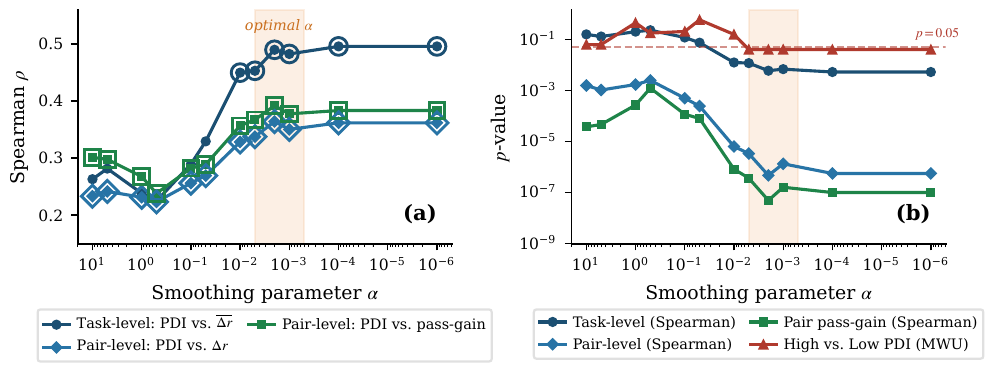

SPARK is an automated skill-generation framework for LLM agents. Rather than asking models to draft skills from prior plans,
it uses the trajectory-level Posterior Distillation Index (PDI) to assess whether each skill is grounded in task-environment evidence,
and uses that signal to guide exploration, correct failure modes, and distill transferable SKILL.md documents.
Equipping agents with human-written procedural skill documents can substantially improve task success rates, but most automated skill-generation methods
operate before environment interaction: the model prescribes how a task should be solved and packages that prior intent into SKILL.md.
Such skills are often dominated by generic priors and can yield negligible or even negative gains when executed.
SPARK is built on a central claim: effective procedural knowledge must be posterior-based. It should encode environment-specific constraints, execution dependencies, and failure modes that are discoverable only through interaction with the environment. Once distilled, this posterior experience becomes reusable and verifiable guidance for future agents.
PDI provides an interpretable measure of whether a skill is grounded in task-environment evidence rather than unverified prior plans.
SPARK preserves execution logs, verifier signals, and exploration-memo histories for full trajectory-level auditing and analysis.
A memo-based PDI proxy can trigger soft or strong interventions during exploration, preventing trajectories from stagnating or repeating ossified plans.
The cost of expensive teacher exploration is amortized across many low-cost student invocations, with student inference as low as $0.02/task.
On ALFWorld, whose text-based household tasks differ sharply from terminal programming tasks, PDI-guided skills improve success from 16.7% to 40.0%.
SPARK’s task-construction pipeline turns prompt-level task ideas into executable, oracle-verified Harbor tasks that support controlled ablations and transfer evaluation.
SPARK decouples task construction from skill generation into two pipelines that can evolve independently: tasks can be expanded continuously, while skills are repeatedly distilled from verified trajectories without manually authoring both sides.

SKILL.md upon success, and receives targeted PDI-proxy interventions upon failure.
Right: Task Construction. Blueprint generation → repair → critique → oracle validation converts prompts into executable benchmark instances;
student agents then evaluate whether PDI-grounded knowledge transfers across tasks rather than overfitting to the teacher’s original trajectory.
execute → judge → summarize → retry → distill skill
The memo is rewritten as a whole rather than appended to, preventing the context from being flooded with low-value stdout; historical versions are still retained so cross-attempt patterns remain analyzable.
prompt → retrieval → TaskBlueprint → Harbor task → oracle validation
This is a build-and-verify process rather than a one-shot LLM generation step. It also enables batch generation of unseen instances from the same problem class, testing whether a skill captures reusable procedural structure.
The following cases illustrate external transfer (lean4-proof), online PDI intervention (3d-scan-calc / manufacturing-codebook-normalization), and verified execution chains outperforming plan repetition (tactic reproduction). Select a tab to inspect each case.

/tmp to reward = 1.0 on the first Lean compile.
-DwarningAsError=true./tmp-then-replace workflow, making it easy to corrupt solution.lean.norm_num / ring / linarith tactic chains./tmp-then-replace workflow to avoid damaging the original file.
| φplan | φexec | Average Δr | Gap vs Human |
|---|---|---|---|
| Low | High | +0.377 | +0.312 |
| Low | Low | +0.321 | +0.393 |
| High | High | +0.143 | +0.071 |
| High | Low | +0.028 | −0.040 |
The highlighted row is the quadrant PDI is designed to maximize. Counterintuitively, Low plan + Low exec can also be beneficial: as long as the skill does not collapse onto the memo, it can still help even without perfectly matching the command distribution. The worst case combines both problems: the skill merely restates what the agent intended to do, with little evidence of what it actually did.
After task success, SPARK aggregates six structured evidence sources and passes them to the skill-distillation model, enabling it to extract transferable knowledge from the full solution path and obstacle context rather than summarizing the surface of a single successful attempt.
An abstracted task instruction that captures the problem class rather than instance-specific details.
The key command sequence from the successful trajectory, filtered through semantic classification, importance scoring, and low-signal removal.
The environment-verified outcomes: which tests passed and what final reward was achieved.
Recurring failure modes and confirmed caveats distilled from the complete attempt history.
Runtime context from the Dockerfile, including base image, packages, and SDKs.
The stdout tail from successful execution, used to calibrate abstraction against raw evidence.
PDI is a trajectory-level metric: it measures whether the final SKILL.md repeats prior intent or records environment-verified evidence.
We use Jensen–Shannon divergence to compare token distributions and convert distributional distance into similarity
\(\psi(P_x,P_y) = 1 - \mathrm{JS}(P_x,P_y)\).
The similarity between the successful execution-command distribution PE and the final skill distribution Ps. Higher values indicate that the skill focuses more on environment-verified operations.
The similarity between PP, aggregated from all Next Strategy entries in the memo, and Ps. Higher values indicate that the skill resembles repeated plans rather than independently verified knowledge.
The distributional stability of Verified Facts and failed-test sets across attempts. Higher values indicate rigid task understanding and repeated circulation around the same failure mode.
The equal-weight linear form is deliberate: PDI is designed as an interpretable, benchmark-transferable diagnostic metric rather than a predictive model overfit to a particular benchmark. Weight-sensitivity analysis shows that sign consistency is sufficient for significant correlation; cross-validated fitted weights perform worse on held-out data.

SPARK treats runnable tasks as a validation interface for trajectory-level skill distillation, not as a predefined list of task categories. A prompt-level task idea is converted into a self-contained Harbor task through a build-and-verify pipeline that makes the instruction, environment, oracle solution, and pytest verifier mutually consistent before the task is accepted.
A JSON prompt supplies the task idea, optional tool requirements, environment hints, and constraints. These inputs define the validation target for a generated task without claiming that SPARK imposes an intrinsic task scope.
The model emits a structured TaskBlueprint: instruction markdown, Docker runtime, support files, deterministic data builder, oracle code, verifier code, output path, assumptions, and validation checks.
SPARK critiques the blueprint for internal mismatches, answer leakage, verifier-oracle drift, unsupported assumptions, schema errors, and output-path inconsistencies, then repairs blocking issues before acceptance.
The accepted blueprint is materialized as a Harbor directory with instruction.md, task.toml, environment/Dockerfile, build_data.py, solution/solve.sh, and pytest tests.
Harbor first checks the task package, then runs the oracle solution and verifier. A task is accepted only when deterministic validation completes successfully and the reward reaches r = 1.0.
Each generation run records the blueprint, critique results, render report, validation feedback, and repair history, making task construction auditable rather than a one-shot LLM artifact.
SPARK-generated skills outperform human-written skills on most student models; several smaller models even surpass the teacher models’ interaction-free, no-skill performance after receiving SPARK skills—weaker students can outperform stronger teachers.





For an ablation setting, SPARK uses the same task-construction pipeline to produce independently validated evaluation instances under controlled constraints. This isolates whether a distilled skill captures reusable procedural structure rather than memorizing the original trajectory.
| Student Model | Baseline | SPARK (Generated) | Human | Δ vs Baseline |
|---|---|---|---|---|
| DeepSeek-Chat | 43% | 87% | 80% | +43% |
| GPT-5.1-Codex | 17% | 83% | 50% | +67% |
| GPT-5.4-mini | 7% | 53% | 33% | +47% |
| GPT-5.4-nano | 56.7% | 90.0% | 83.3% | +33.3% |
| GLM-4.5-Air | 45.0% | 90.0% | 82.0% | +45.0% |
We rerun skill generation on the subset of tasks whose original trajectories had persistently low PDI, enable online PDI intervention, and then perform A/B evaluation under identical downstream conditions. This directly asks: can PDI recover a skill during generation rather than merely score it afterward?
| Student Model | w/o PDI | w/ PDI | Δ |
|---|---|---|---|
| DeepSeek-Chat | 9.1% | 42.4% | +33.3% |
| GPT-5.1-Codex | 0.0% | 24.2% | +21.2% |
| GPT-5.4-mini | 18.2% | 36.4% | +12.1% |
| GPT-5.4-nano | 15.2% | 30.3% | +15.2% |
| GLM-4.5-Air | 3.0% | 15.2% | +12.1% |
After reflection step k, SPARK computes the proxy signal \( \hat{d}_k = w_k \cdot \mathrm{PDI}_k \), where \( w_k = \min(1, k/W) \) is a linear warm-up term (W=2) that suppresses early-stage noise.

Requirements: Python 3.12, uv, Docker, Harbor, and an OpenAI-compatible LLM endpoint
read from OPENAI_API_KEY / OPENAI_BASE_URL environment variables or a .env file.
uv sync
uv run python run_tasks_gen.py \
--prompt-file spark_tasks_gen/examples/3d_scan_calc_prompt.json \
--model gpt-5.4
Outputs are written to spark_tasks_gen/generated_tasks/; each task is first checked by oracle validation and rejected if it fails.
uv run python run_pipeline.py \
--agent qwen-coder \
--model qwen3-coder-next \
--tasks-dir tasks-no-skills \
--max-retries 3 \
--parallelism 4
By default, this launches the dashboard at http://localhost:8765; add --no-dashboard for CLI-only execution.
uv run python run_eval_skills.py \
--agent qwen-coder \
--model qwen3-coder-next \
--skill-source-model qwen3-coder-next \
--tasks-dir tasks-no-skills
This automatically performs A/B evaluation on the same task set under the native baseline and SPARK SKILL.md injection conditions, writing results to
spark_skills_gen/skills_eval_result/.
spark_tasks_gen/generated_tasks/<task-id>/ — synthesized Harbor tasksspark_tasks_gen/generated_tasks/_artifacts/ — task-generation tracesspark-jobs/ — Harbor execution outputsspark_skills_gen/skills_gen_result/<model>/<task>/ — distilled SKILL.md files and attempt logsspark_skills_gen/skills_eval_result/<model>/<run>/ — skill A/B evaluation summariesEvidence Over Plans: Online Trajectory Verification for Skill Distillation — NeurIPS 2026 submission.
Two pipelines for task construction and skill generation, with a dashboard, PDI-proxy implementation, and evaluation scripts.
SPARK PDI Trajectory — full exploration memos, successful trajectories, and distilled SKILL.md artifacts used for PDI analysis.
The 86 runnable tasks used in the main experiments, available via sparse checkout into a local SPARK workspace.
@inproceedings{zhou2026spark,
title = {Evidence Over Plans: Online Trajectory Verification for Skill Distillation},
author = {Zhou, Yang and Dong, Zihan and Wang, Zhenting and Jin, Can and
Zhao, Shiyu and Guo, Bangwei and Gu, Difei and
Zhang, Linjun and Zhou, Mu and Metaxas, Dimitris N.},
}Contact: eta.yang@rutgers.edu · dnm@rutgers.edu